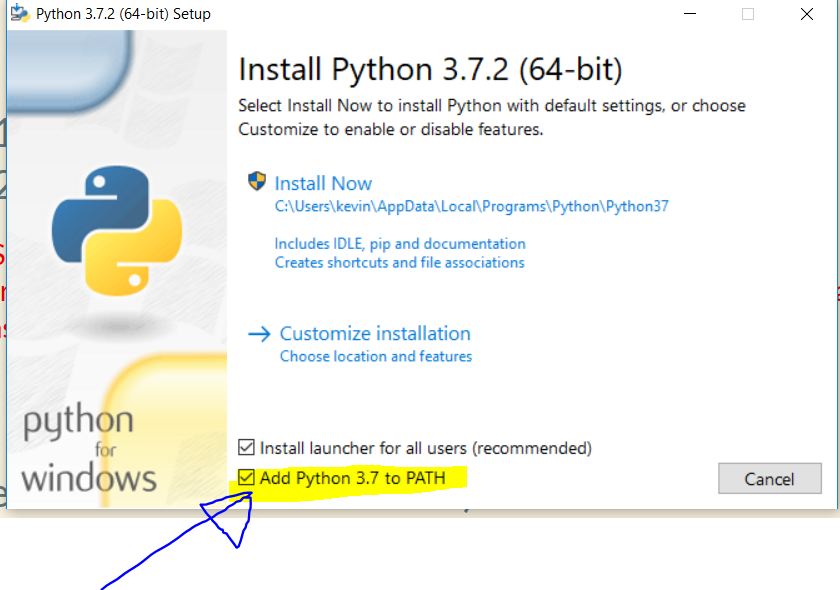
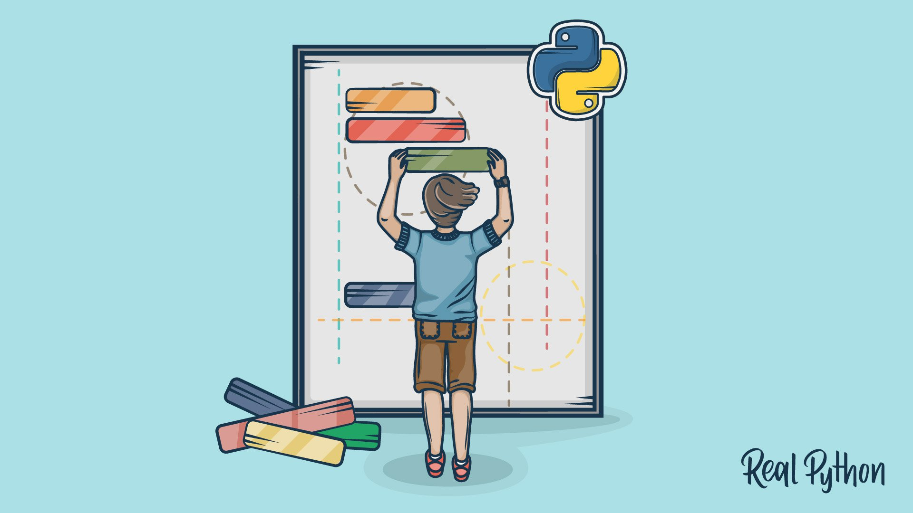

Python - A Hacker's Introduction
Presented by Kevin Taha
- Part 1 : Intro to Python
- Part 2: Applications: Reverse Shell Backdoor
Full Slides available at kevintxy.github.io/Python_Workshop/
Requirements
1. Python 3
- Option 1 (Recommended): Install from python.org or SSH to lab machine such as data.cs or maven.itap
- Option 2: Use repl.it (online IDE, will NOT work for part 2)
WINDOWS USERS: Please check the "Add Python3.7 to PATH" button.
If you prefer using the Linux Subsystem for Windows, open BASH and run "sudo apt install python3" instead
2. Any Text Editor
- I'll be using VIM on Bash for Windows, VS Code is also amazing.
3. Network Listener (For Part 2) - We will handle this later
- Easy Option: NetCat
- Hard: Write your own (We'll go over this)
Windows Users: Remember to ADD TO PATH
This is required for Python to run in command line or Powershell
Other Notes and Warnings
All information in this workshop is for educational purposes. If you have any issues please contact me! All workshop material is open source. Images used are courtesy of RealPython.
Getting Help
These slides should be comprehensive enough for you to reference back on your own
kevintxy.github.io/Python_Workshop
Contact Me!
ktaha@purdue.edu
Curriculum
Python3 - Easy as Py
- Variables & Basics
- String Methods and Lists
- Loops
- Functions and Classes
- Some Data Structures
Applications: Reverse Shell Backdoor
- Mini intro to sockets
- Let's Hack!
Part 1) Intro to Python
Why Know Python?
Example: Ternary Operators: C vs Python
In C:
int a = 1;
printf("%s", (a == 1) ? "A IS ONE":"A IS NOT ONE");
// Output: "A IS ONE"
In Python:
a = 2
print("A IS ONE") if a is 1 else "A IS NOT ONE"
# Output: "A IS NOT ONE"
Why know Python?
2) Writing and Compiling
Let's Get Started!
- Get an active text editor and terminal running!
- Native Users: Any text editor like VSCode. Have a terminal window (Bash, Powershell, VSCode Terminal, etc) open to your working directory
- Repl.it users: Just open a new Python project!
- Play around with the command line! Native users: type "python" in terminal to open it.
How to "Compile"
print("Hello Python")
That's it!
Now let's run it:
python hello.py Side Note: Creating Executables
UNIX/Mac Users: Add extra line to top of your code, use chmod
#!/usr/bin/env python
print("Hello World")
In terminal: chmod +x hello.py, then run ./hello.py
Windows users: Many options, py2exe is one good one.
3) Variables and Types
Variable Usage - Declaring
Variable Usage - Printing
For Python 3.6+, Google "Python f-strings"
4) Lists and Strings
Lists & String Methods
Python has 4 major collection-based data types
- Lists - Dynamically sized arrays
- Tuples - Ordered & unchangable lists
- Sets - Unordered, Unindexed, no duplicates - Similar to mathematical sets
- Dictionaries - Very powerful "Hash Table" style structure
Working with lists (Example + Live Demo)
Strings Intro & Demo
List & String Splicing
5) Control Flow
Control Flow
Python has many control flow statements, these are the most notable:
If statements
Self explanatory, works like every other language. INDENT!
Shorthand If and Ternaries
While Loops
For Loops
- Python For loops are untraditional
- For loops require some kind of "iterable" object or "sequence" to go through
- This could be lists, strings, or many other types of data structures
More for loop examples
6) Functions and Classes
Python is an Object-Oriented language that can behave like a dynamic/functional language
Functions
Classes
Python OOP could justify its own workshop, but here are the basics:
Imports
The "import" is used for libraries and it is very versatile.